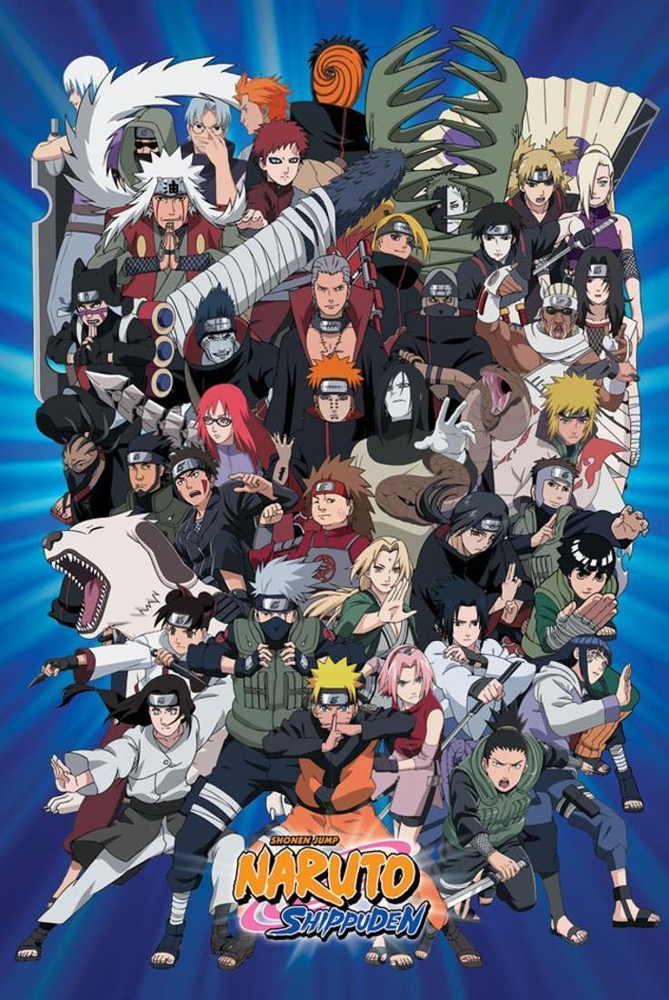

Caballeros del Zodiaco
En 2016, para el trigésimo aniversario del manga clásico de Saint Seiya de Masami Kurumada, se hizo en
Japón una exposición conmemorativa con muchos productos relacionados el clásico manga de Saint Seiya
(Masami Kurumada) y al anime clásico de Saint Seiya (Toei Animation). Esta gran exposición
conmemorativa, se llevó a cabo también en China en Hong Kong.

este articulo es texto de prueba
DBZ
Su trama describe las aventuras de Goku, un guerrero saiyajin, cuyo fin es proteger a la Tierra de otros
seres que quieren conquistarla y exterminar a la humanidad. Conforme transcurre la trama, conoce a otros
personajes que le ayudan en este propósito.
este articulo es texto de prueba.
Naruto
es el protagonista principal de la serie del manga y anime Naruto. El es un joven gennin de Konohagakure
e hijo de Minato Namikaze y su esposa Kushina Uzumaki. Es miembro del Equipo Kakashi, y además, el
ultimo Jinchuriki del Zorro de Nueve Colas.

este articulo es texto de prueba.